Добро пожаловать


Описание
Седона-небольшой городок в Аризоне,
заслуживающий большего!
Рассмотрим 5 причин, по которым Седона круче, чем Гранд Каньон!
- Настоящий
городок
–№1–
Седона-не аттрацион для туристов, там
течёт своя жизнь 
Жильё
Рекомендуем пожить в настоящем
мотеле, всё как в кино!
Еда
Всегда заказывайте фирменный бургер,
вы не разочаруетесь!
Сувениры
Не только китайского, но и местного
производства!
- Там есть
мост дьявола
–№2–
Да, по нему можно пройти! Если конечно
вы осмелитесь - Небольшая
площадь
–№3–
все достопримечательности
находятся очень близко - Красивая
дорога
–№4–
ехать в седону из лас-вегаса совсем
не скучно! - Мало
туристов
–№5–
большинство едет в гранд каньон
и толпится там
Заинтересовались?
Заинтересовались?
Укажите предполагаемые даты поездки,
и мы покажем вам лучшие предложения гостиниц в седоне